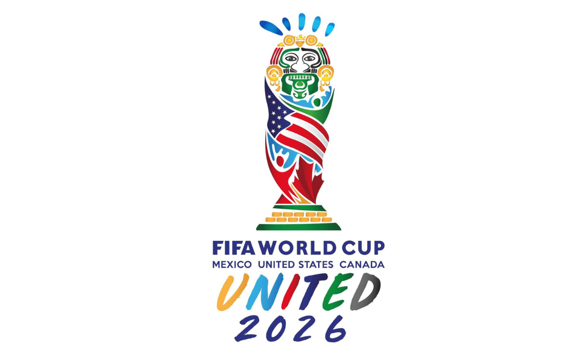

A Copa do Mundo de 2026, terá três países como sedes, sendo eles EUA, México e Canáda.
O primeiro jogo de abertura da Copa do Mundo irá acontecer no Estádio Azteca, no México e a final será no MetLife Stadium, mo EUA.